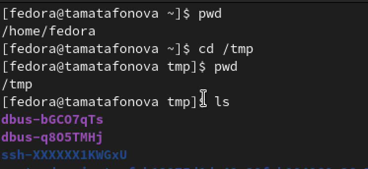
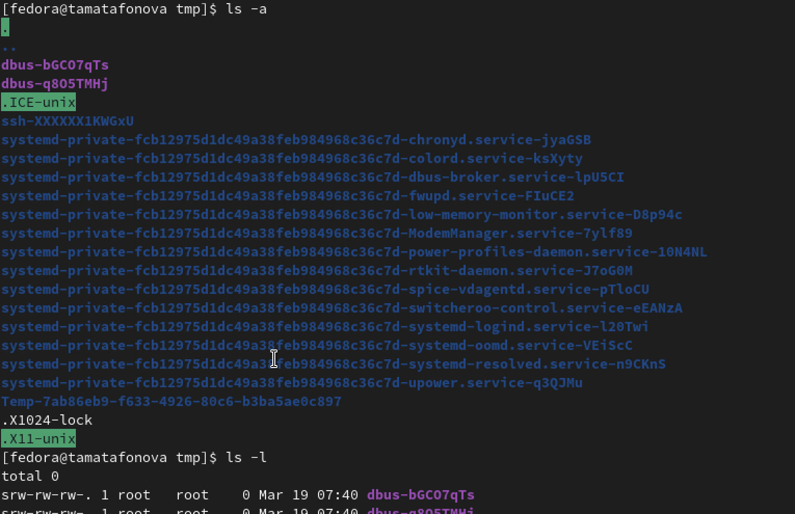
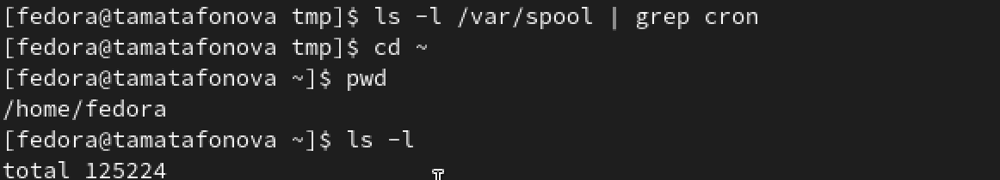
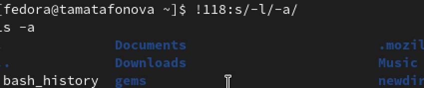

Автор: Матафонова Таисия Антоновнв Преподаватель: Кулябов Дмитрий Сергеевич профессор * профессор кафедры теории вероятностей и кибербезопасности * Российский университет дружбы народов им. П. Лумумбы * kulyabov-ds@rudn.ru * https://yamadharma.github.io/ru/
Информация о докладчике
Студентка НБИбд-01-25
Приобретение практических навыков взаимодействия пользователя с системой по- средством командной строки.
1.Проверяем текущий каталог, переходим в /tmp, снова проверяем и смотрим содержимое.

2.Смотрим скрытые файлы (-а), подробную информацию (-l), все вместе (-al) и типы файлов (-F).

3.Проверяем наличие каталога cron, возвращаемся в домашнй каталог и смотрим владельцев каталога.


4.Создаем вложенные каталоги, проверяем. Создаем три папки одной строкой, проверям через grep.

5.Удаляем три папки, пробуем удалить newdir, удаляем вложенную morefun, проверяем что внутри newdir пусто.

6.Смотрим историю команд, модифицируем команду по номеру.


В ходе выполнения лабораторной работы освоены базовые команды для навигации, управления каталогами и работы с документацией. Полученные навыки позволяют эффективно взаимодействовать с системой через командную строку.
Командная строка — это интерфейс взаимодействия пользователя с операционной системой, в котором команды вводятся в виде текстовых строк.
Для определения абсолютного пути текущего каталога используется команда pwd. Пример: pwd выведет /home/fedora.
Для определения типа файлов и их имен используется команда ls с опцией F. Пример: ls -F покажет имена файлов с символами: / для каталогов, * для исполняемых файлов, @ для ссылок.
Для отображения скрытых файлов используется опция -a команды ls. Пример: ls -a покажет все файлы, включая те, чьи имена начинаются с точки.
Для удаления файла используется команда rm, для удаления пустого каталога — rmdir. Можно ли сделать одной командой: да, командой rm с опцией -r можно удалить каталог вместе с содержимым. Пример: rm файл.txt, rmdir пустой_каталог, rm -r каталог_с_файлами.
Для вывода списка последних выполненных команд используется команда history.
Для модифицированного выполнения команды из истории используется конструкция !номер:s/что_меняем/на_что_меняем. Пример: !118:s/-l/-a/ заменит в команде под номером 118 опцию -l на -a и выполнит её.
Пример запуска нескольких команд в одной строке: cd /tmp; ls -l (сначала перейти в /tmp, затем показать содержимое).
Экранирование — это способ использования специальных символов как обычных с помощью обратного слеша . Пример: нужно создать файл с именем ? Можно так: touch * — тогда создастся файл с именем , а не будет воспринято как спецсимвол.
После выполнения команды ls с опцией l выводится подробная информация: тип файла, права доступа, количество ссылок, владелец, группа, размер, дата последнего изменения и имя файла.
Относительный путь — это путь относительно текущего каталога. Абсолютный путь начинается от корневого каталога /. Пример абсолютного пути: cd /home/fedora/Documents. Пример относительного пути: cd Documents (если текущий каталог /home/fedora).
Информацию о команде можно получить с помощью команды man. Пример: man ls покажет руководство по команде ls.
Для автоматического дополнения вводимых команд используется клавиша Tab.
ТУИС. Архитектура компьютеров и операционные системы. Раздел “Операционные системы”. Лабораторная работа №6.